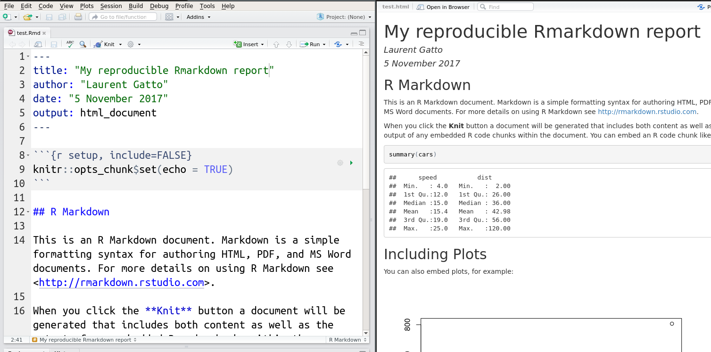

Chapter 7 Reproducible research
For a general introduction on the topic in French, see Pouzat, Davison, and Hinsen (2015Pouzat, Christophe, Andrew Davison, and Konrad Hinsen. 2015. “La Recherche Reproductible : Une Communication Scientifique Explicite.” Statistique et Société 3 (1). http://www.publications-sfds.fr/index.php/stat_soc/article/view/448.).
7.1 Working reproducibly
Possibly explain briefly the different types of preproducibility.
Useful reference: Markowetz (2015Markowetz, Florian. 2015. “Five Selfish Reasons to Work Reproducibly.” Genome Biology 16 (1): 274. https://doi.org/10.1186/s13059-015-0850-7.).
7.2 knitr and rmarkdown
Reproducible research is an essential part of any data analysis. With the tools that are available, one can argue that it has become more difficult not to produce reproducible reports than to producing then.
Reproducible documents have been a part of R since the very
beginning. See for example Gentleman and Temple Lang (2004Gentleman, Robert, and Duncan Temple Lang. 2004. “Statistical Analyses and Reproducible Research.” Bioconductor Project Working Papers. Working Paper 2. https://biostats.bepress.com/bioconductor/paper2.), to see how such compendia play a
central role within the Bioconductor
project (more about Bioconductor in it’s dedicated
chapter). Originally, these were written in LaTeX, interleaved with R
code chunks, forming so called Sweave documents (with extension
.Rnw).
More recently, it has become to use the
markdown syntax
markup language, rather than LaTeX. Once interleaved with R code
chunks, these documents become Rmarkdown files (.Rmd). The can be
converted into markdown using knitr::knit, that executes the code
chunk and incorporates their output in the resulting markdown
documents, which itself is converted to one of many output formats,
typically pdf of html using pandoc. I R, this
final conversion is done using rmarkdown::render (that relies on
pandoc). The rmarkdown package is
developed and maintained by RStudio and benefits from excellent
documentation, support and integrates into the RStudio editor.

RStudio now also support R Notebook documents5 See also Jupyter notebooks initially developed for Python, but that can run R code as well. that execute individual code chunks that are displayed directly in the source document.

7.3 Additional features
Among the most options that can set for code chunks is
cache. Settingcache=TRUEwill avoid that specific code chunk to be cached and not recomputed every time the documented in knitted, unless the code chunk was modified. This is an important feature when long computations are necessary.The
DT::datatablefunction allows to create dynamic tables directly from R, as show below.
ip <- installed.packages()
DT::datatable(ip)- It is always useful to finish a Rmarkdown report with a section
providing all the session information details with the
sessionInfo()function, such at the end of this material. This allows readers to review the version of R itself and all the packages that were used to produce the report.
Challenge
Prepare an Rmarkdown report summarising the portal ecology data. The report should include a Material and methods section where the data is read in (ideally from the online file) and briefly described, a Data preparation section where rows with missing values are filtered out, and a Visualisation section where one or two plots are rendered. Finish your report with a Session information section.
7.4 Docker containers
Page built: 2019-01-07